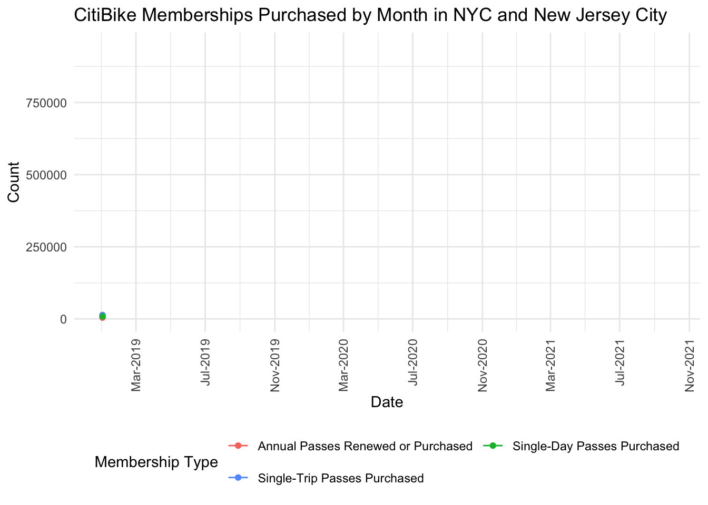

library(flexdashboard)
library(tidyverse)
library(viridis)
library(lubridate)
library(gganimate)
library(zoo)
library(tis)
library(scales)
library(plotly)
#Input Citibike Membership Datafile
membership_df =
read_csv("ridership.csv") %>%
mutate(date = factor(date, ordered = TRUE, levels = c("01/2019", "02/2019", "03/2019", "04/2019",
"05/2019", "06/2019", "07/2019", "08/2019",
"09/2019", "10/2019", "11/2019", "12/2019",
"01/2020", "02/2020", "03/2020", "04/2020",
"05/2020", "06/2020", "07/2020", "08/2020",
"09/2020", "10/2020", "11/2020", "12/2020",
"01/2021", "02/2021", "03/2021", "04/2021",
"05/2021", "06/2021", "07/2021", "08/2021",
"09/2021", "10/2021"))) %>%
rename(ct_annual_members = annual_members) %>%
rename(ct_single_trip_passes = single_trip_passes) %>%
rename(ct_single_day_passes = single_day_passes) %>%
rename(ct_three_day_passes = three_day_passes) %>%
rename(ct_total_annual_members = total_annual_members) %>%
mutate(date = as.yearmon(date, "%m/%Y")) %>%
mutate(date = as.jul(date)) %>%
mutate(date = as.Date(date)) %>%
pivot_longer(
cols = starts_with("ct"),
names_to = "measure",
values_to = "count"
)
measures_of_interest =
membership_df %>%
filter(measure %in% c("ct_annual_members","ct_single_day_passes","ct_single_trip_passes")) measures_of_interest %>%
ggplot(aes(x = date, y = count)) +
geom_line(aes(group = measure, color = measure)) +
geom_point(aes(group = seq_along(date), color = measure)) +
transition_reveal(date) +
scale_x_date(breaks = "4 months", labels = date_format("%b-%Y")) +
scale_colour_discrete(name = "Membership Type",
breaks = c("ct_annual_members", "ct_single_day_passes",
"ct_single_trip_passes"),
labels = c("Annual Passes Renewed or Purchased",
"Single-Day Passes Purchased",
"Single-Trip Passes Purchased")) +
labs(x = "Date", y = "Count") +
ggtitle("CitiBike Memberships Purchased by Month in NYC and New Jersey City") +
theme_minimal() +
theme(legend.position = "bottom") +
guides(color = guide_legend(nrow = 2, byrow = TRUE)) +
theme(axis.text.x = element_text(angle = 90, vjust = 0.5, hjust = 1))